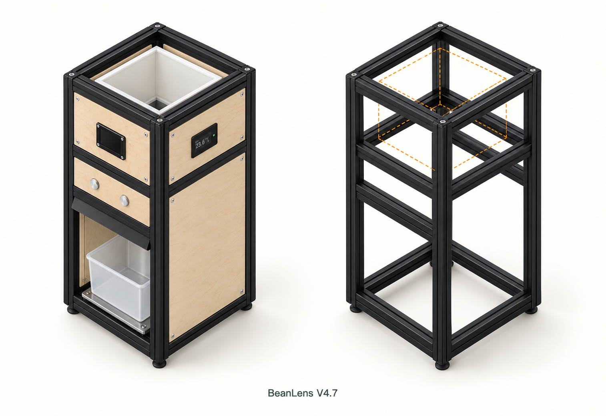

为什么用连续立柱
立柱从底到顶不中断，顶/底横梁抵在柱侧。两个方向各用直角角码，不依赖四通方块；位置可调，也不用先在端面攻牙。
代价是内部角码占空间，需要校方、复紧和称台避让。现有2020继续用；是否承受整机载荷和侧推仍需实物验证。
460×4 / 200×6 / 180×8
18根净长4.48m。三面木板分块内嵌下延，边缝约2、面内凹1；型材在外角外露。
BEANLENS / 2026-10-16 / V4.7内嵌面板/PP制作
骨架220宽×240深×460高mm。保留7根460mm、2根400mm现有料中的有效长度，补购同槽型黑色欧标2020、净长180mm × 4根。

中框顶324＋托耳6＝斗底330；PP主斗110到440，上口圈到442；框顶460。打开已更新的交互组装／爆炸图 · 七页A3尺寸PDF · 型材／海洋板裁切CSV

黑色外观参考由共享坐标对照图引导生成；准确高度、梁数和下料以同尺寸对照/尺寸图为准，不以AI局部细节加工。三面内嵌板下延，以黑色腰梁分块；正面留取盒口。
按数值测量；绿色符号标示角码区域，不是安装孔模板。
立柱从底到顶不中断，顶/底横梁抵在柱侧。两个方向各用直角角码，不依赖四通方块；位置可调，也不用先在端面攻牙。
代价是内部角码占空间，需要校方、复紧和称台避让。现有2020继续用；是否承受整机载荷和侧推仍需实物验证。
460×4 / 200×6 / 180×8
18根净长4.48m。三面木板分块内嵌下延，边缝约2、面内凹1；型材在外角外露。
紧凑2020两孔90°角码：用28套，买32套；螺钉、匹配T螺母各64只。内嵌面板固定F11另列；F08只管料斗木壳/托耳。
槽5系统的item 0.0.425.02仅是历史规格参照，不列本次欧标型材默认采购项。已知型材为黑色欧标2020，T螺母/角码按实际槽口向原卖家配套，M5长度按角码厚度与槽深确定。
端盖/脚套各4；面板固定改用F11内角片背托。称台底板四角约25方区域先核净空；紧凑角码在梁宽内可不切角。
按3mm锯缝，原料已修平。数字为成品净长，单位mm；新购四根180成品不再扣锯缝。
| 编号 | 来源 | 原料长 | 产出净长 | 锯缝合计 | 余料 |
|---|---|---|---|---|---|
| S01 | 已有 | 460 | 460 | 0 | 0 |
| S02 | 已有 | 460 | 460 | 0 | 0 |
| S03 | 已有 | 460 | 460 | 0 | 0 |
| S04 | 已有 | 460 | 460 | 0 | 0 |
| S05 | 已有 | 460 | 200＋200 | 6 | 54 |
| S06 | 已有 | 460 | 200＋200 | 6 | 54 |
| S07 | 已有 | 460 | 200＋200 | 6 | 54 |
| S08 | 已有 | 400 | 180＋180 | 6 | 34 |
| S09 | 已有 | 400 | 180＋180 | 6 | 34 |
| S10 | 新购成品 | 180 | 180 | 0 | 0 |
| S11 | 新购成品 | 180 | 180 | 0 | 0 |
| S12 | 新购成品 | 180 | 180 | 0 | 0 |
| S13 | 新购成品 | 180 | 180 | 0 | 0 |
4020＋720＝4480＋30＋230＝4740mm。400原料不能切200＋200。只买原棒时，可用一根750mm代替四根180成品，由供应商切4×180；这是替代选项，不重复购买。
量现有型材槽口并向原卖家配套；先松装上下框、量对角线校方，再锁紧和定位中框/相机梁。称台底板与底角码、活动称台与豆盒不能互相顶住。中框前后梁与柱面齐；按钮中心移到Z273，按实物核背部空间。
旧V4.5的400mm柱＋220mm横梁属于440高搭法，不与本版混用。滑闸、双摄、称重孔位仍需实物纸样；本页没有证明±0.1g精度、1kg联调或整机承载通过。